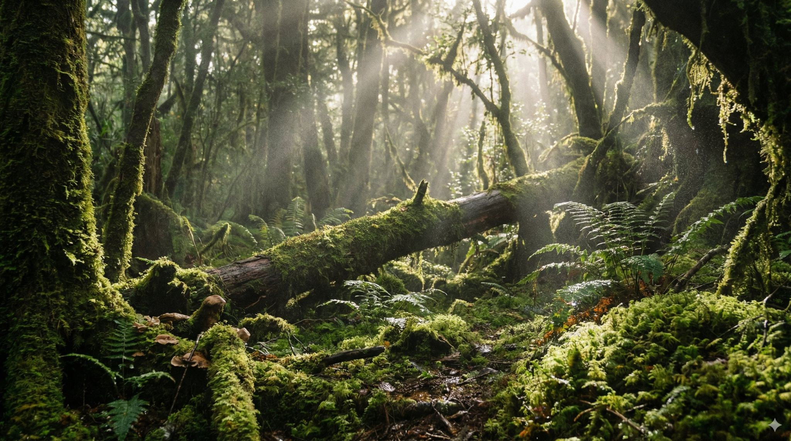

פרק #7 בסדרת לומדים להשתמש ב-Nano Banana Pro:
פורסם במקור ב LinkedIn
פרק #7 בסדרת לומדים להשתמש ב-Nano Banana Pro:
המודל יודע לייצר תמונות ברזולוציה גבוהה מאוד עם טקסטורות שמרגישות מציאותיות. כל פרט כמו עלי טחב או משטח אבן מקבל עומק וחדות.
זה מאפשר ליצור נכסים לשימוש מסחרי או לעיצוב ללא צורך בשיפור נוסף בתוכנות אחרות.
התוצאה נראית כמו צילום באיכות מקצועית.
דוגמא לפרומפט:
"צור תמונה ברזולוציית 4K של רצפת יער מכוסה טחב עם קרני אור עדינות שחודרות בין העצים."
פשוט מדביקים ב gemini . google . com (לא לשכוח ללחוץ על סמל ה״בננה״)
והתוצאה לפניכם:
